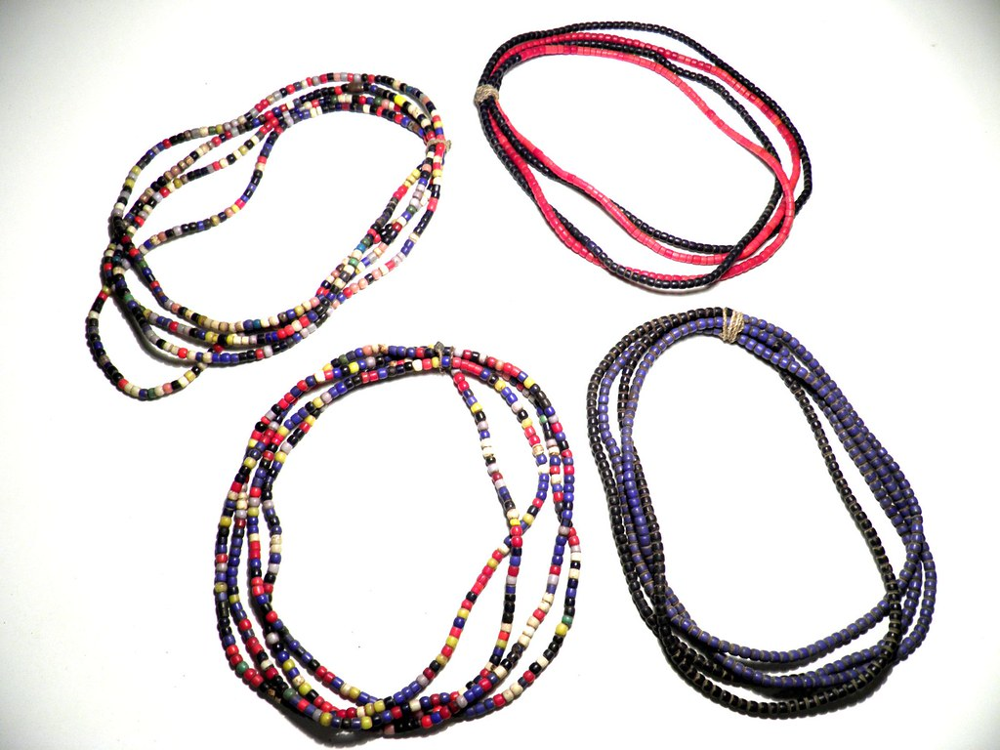
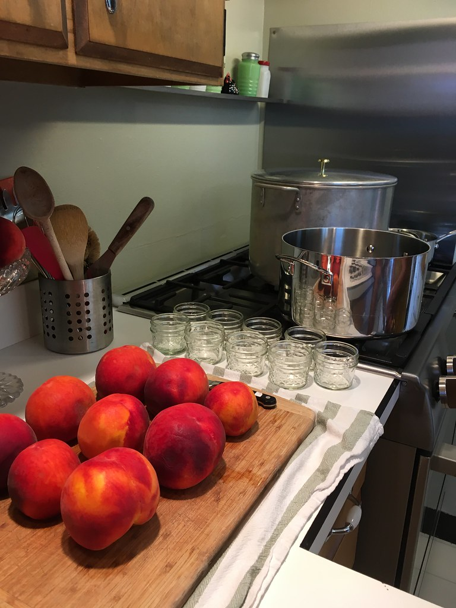
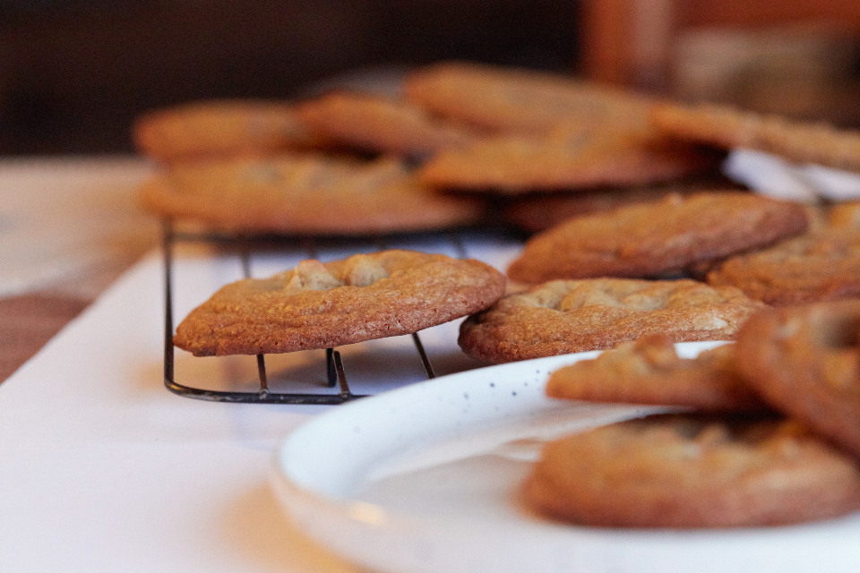

手しごとのコーナー
取手市内の福祉施設の利用者が手がけた雑貨・工芸品・ジャム・クッキーなどを、お食事と一緒に楽しめる物販コーナーです。
取手市内、3つの福祉施設から

つつじ園
取手市内の福祉施設「つつじ園」。利用者の皆さんが手がけた手作り雑貨や工芸品を店内でお取り扱いしています。

ふくろうの郷
取手市内の福祉施設「ふくろうの郷」。利用者の皆さんによる手作り雑貨・工芸品を店内でご紹介しています。


ポニーの家
取手市内の福祉施設「ポニーの家」。ジャムやクッキーなど、手づくりの品々を店内で販売しています。
※各施設の取扱品目の詳細は現在確認中です。店頭で実際の商品をご覧いただけます。
見て、選んで、応援できる
並んでいるのは、どれも一つひとつ手をかけて作られた品です。気になったものを手に取っていただくこと。それがそのまま、地域の福祉施設の活動を後押しすることにつながります。お食事のついでに、少し覗いてみてください。
ご来店案内
手しごとのコーナーの商品は、店内でのみお取り扱いしています。